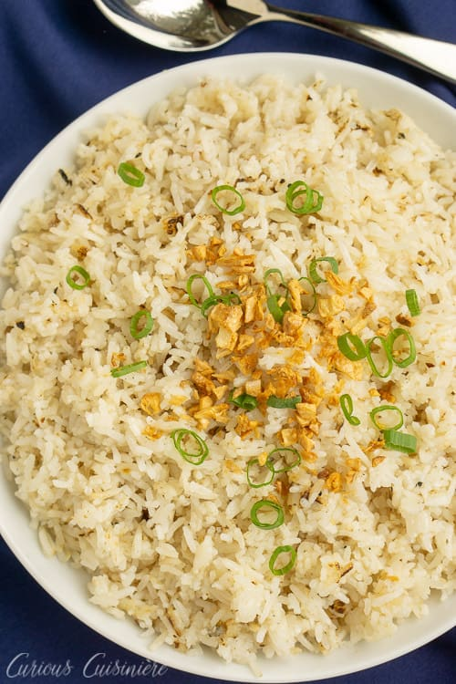

Kanin

Fried Rice
This super-delicious rice can be made mostly ahead of time. You need the steamed rice to cool and dry out a bit before you fry it anyway.
The final result is addictive and goes with everything on this menu, so I like to make 2 batches--one plain and one with the optional
turmeric--which adds a little extra flavor and a pretty orange color.
Ingredients
- 2 cups uncooked jasmine rice
- 1 ½ cups water
- ½ (15 ounce) can unsweetened coconut cream
- 2 teaspoons ground turmeric (Optional)
- ¼ teaspoon salt
- 3 tablespoons coconut oil
- ¼ cup finely chopped garlic
- 2 tablespoons fish sauce
Steps
- Put rice in a large bowl with enough water to cover by a few inches. Swirl with your fingers,
then drain. Repeat until the water runs clear, about 3 times.
- Stir together rice, 1 1/2 cups water, coconut cream, turmeric, and salt in a saucepan. Bring to a boil;
reduce heat and simmer, covered, until rice is tender and liquid is absorbed, about 20 minutes. Chill,
uncovered, 2 to 4 hours or overnight.
- Heat coconut oil in a 12-inch skillet or wok over high heat. Add garlic; cook until it just begins to brown, about 1 minute.
Add rice and spread in an even layer. Cook, without stirring, until lightly browned and crisp on the bottom, about 4 minutes.
Add fish sauce. Cook, stirring, until fully combined and heated through, about 2 minutes.
Return to Home